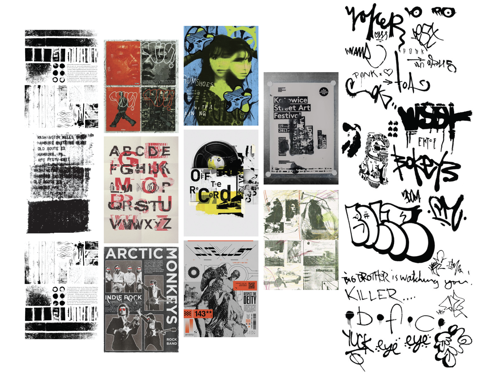
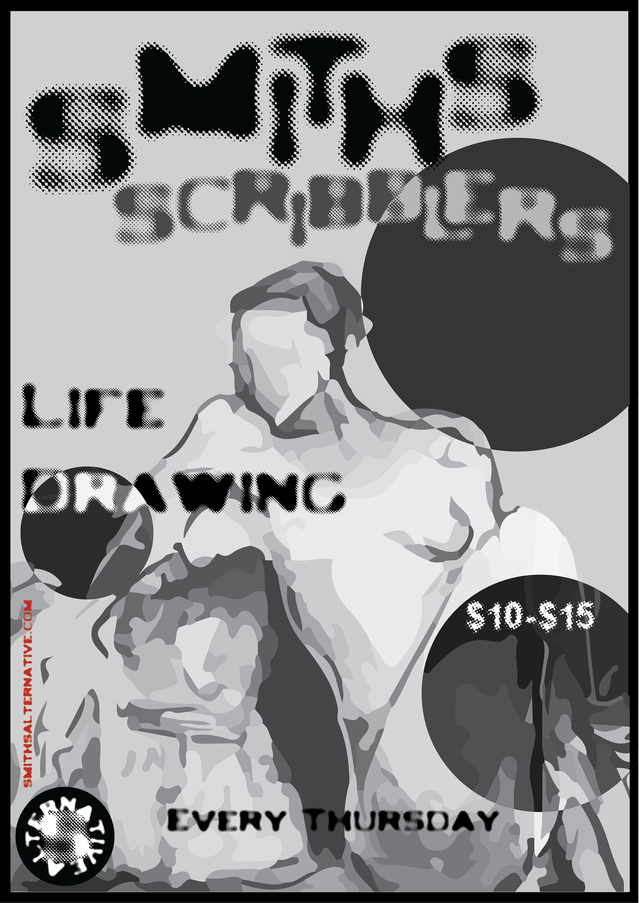
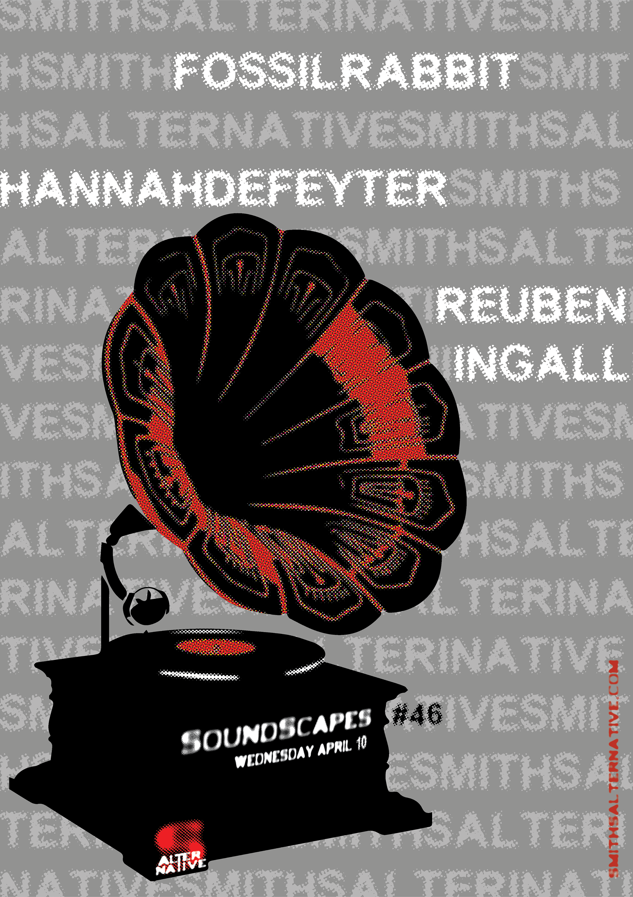
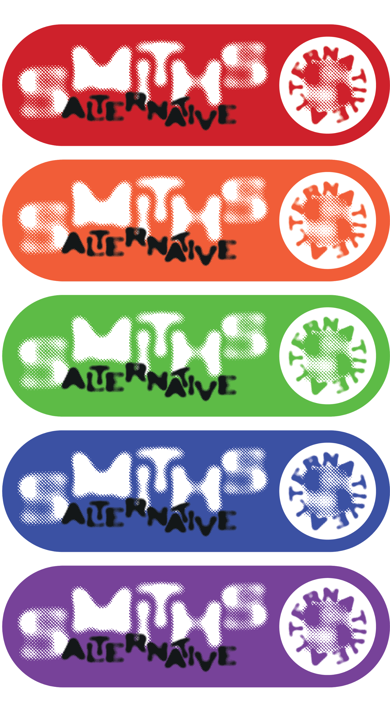

Re-designed Logo Suite
This project was a brand redesign for Smith’s Alternative, a live performance and community venue in Canberra known for its informal, creative atmosphere and diverse programming. The aim was to develop a refreshed visual identity that reflected the venue’s inclusive, expressive character while improving clarity and consistency across its branding.
The design process began with research into the space, audience, and existing identity. Smith’s Alternative is a casual but vibrant venue that supports musicians, performers and artists, attracting a broad community audience. Key considerations included its eclectic programming, strong local presence, and need for a flexible identity that could adapt across print, digital and in-venue applications.

Moodboard
Re-designed Logo Suite



Poster Suite


Social Media Mockups


Signage